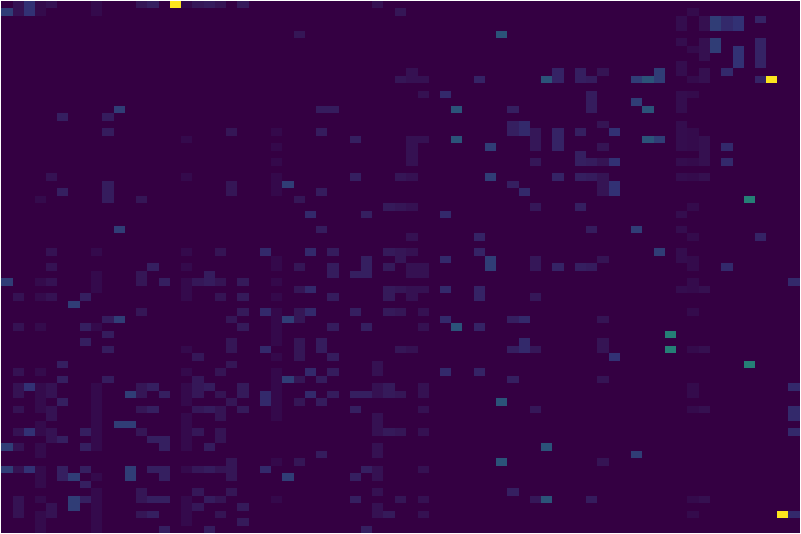
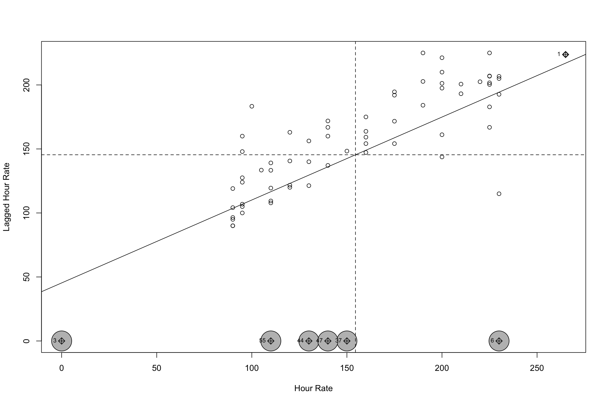
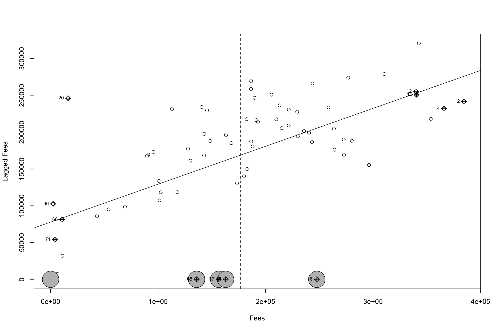
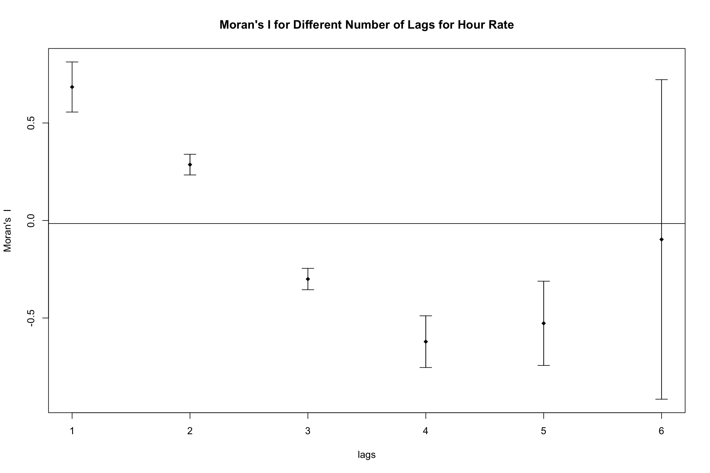
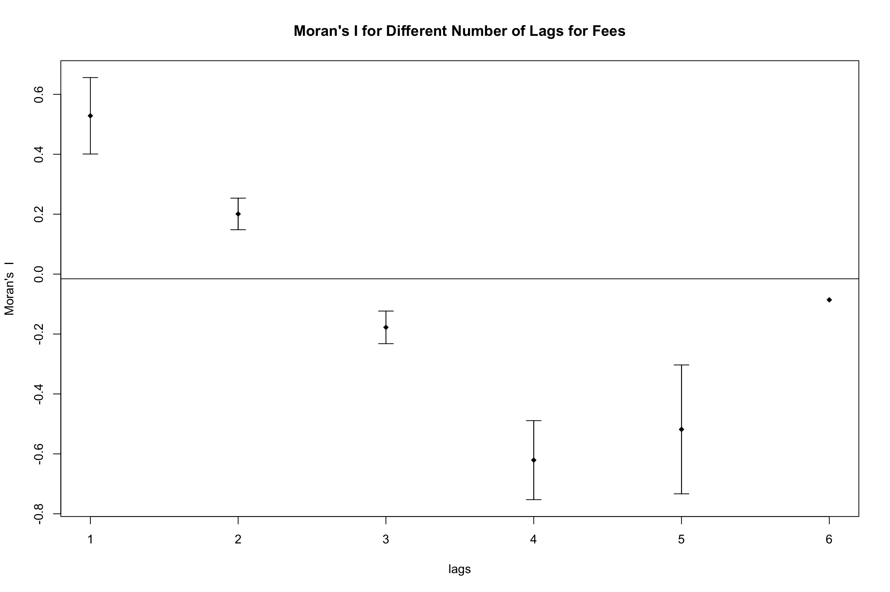
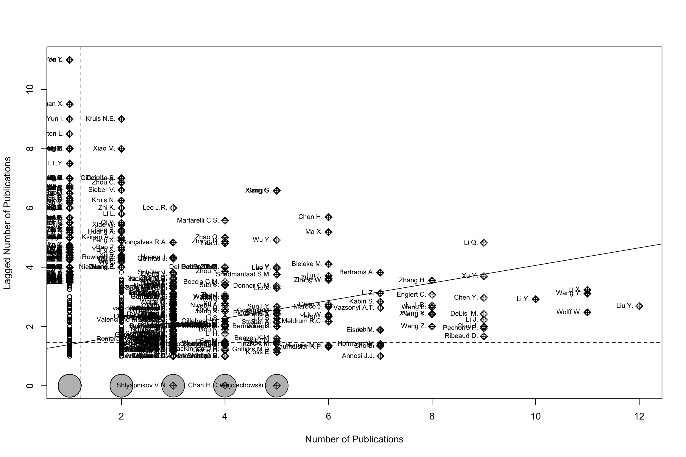
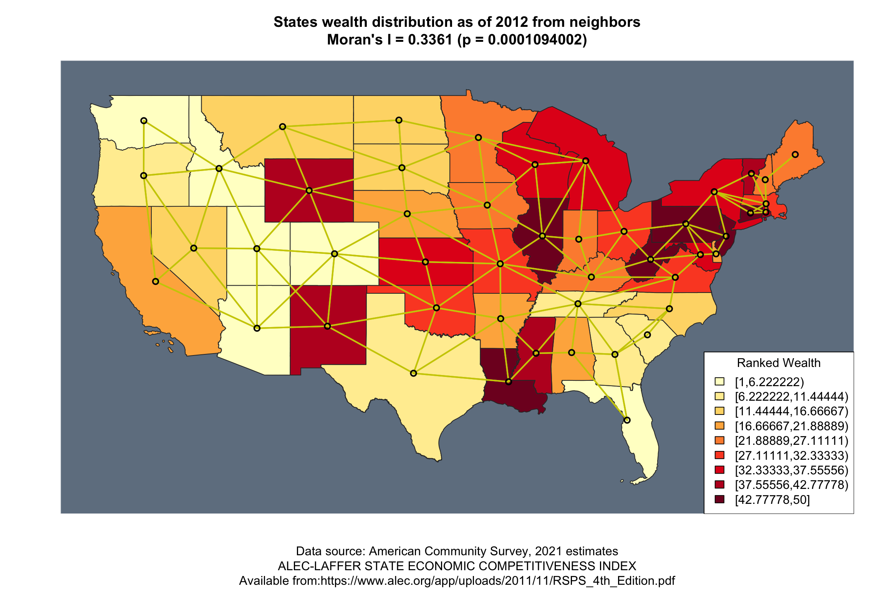
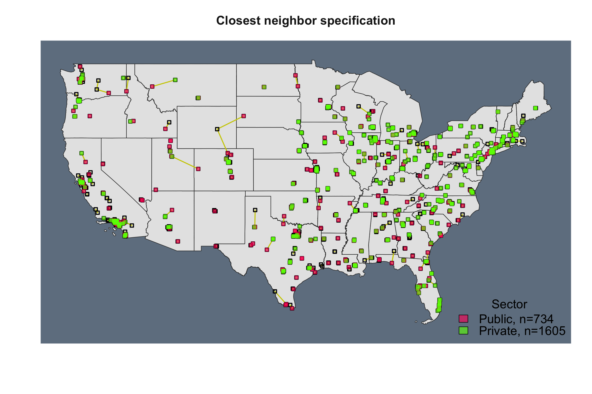

knitr::opts_chunk$set(echo = TRUE, fig.width=12, fig.height=8, warning = F, message = FALSE,cache = TRUE)
# library(flexdashboard)
require(htmltools)Loading required package: htmltoolsChunk setup
knitr::opts_chunk$set(echo = TRUE, fig.width=12, fig.height=8, warning = F, message = FALSE,cache = TRUE)
# library(flexdashboard)
require(htmltools)Loading required package: htmltoolsData Formats and Transformations I (one-mode)
For this deliverable you will need one publication dataset of a topic and time frame of your interest. You can create this file from Scopus as discussed in class.
Please explain the dataset used indicating the time frame, the topic and other inclusion criteria like type of publication, for example.
For this exercise I decided to analyze authorship data on articles regarding self-control. I limited my search to recent articles published in psychology journals.
I will load the data and perform some cleaning.
library(tidyverse)
author <- read_csv("scopus.csv")
colnames(author) |> enframe() |> write_csv("colnames.csv")
colnames(author) <- read_csv("colnames_new.csv") |> pull(new)
author <- author |> mutate(authors = str_replace_all(authors, "., Jr.", ". Jr."))
# Create edgelist. One row per relationship.
edge <-
author |>
# Add rownames for id col
rownames_to_column(var = "article_id") |>
select(article_id,authors, title) |>
# Separate authors using comma delimiter
mutate(authors = str_split(authors, ",")) |>
unnest(authors) |>
mutate(authors = str_trim(authors))
# Check with auids
author |>
select(authors_id) |>
mutate(authors_id = str_split(authors_id,";")) |>
unnest(authors_id) |>
distinct() |>
filter(authors_id != "") |>
nrow()[1] 5888# There are 5,888 unique author ids and 5,594 unique author names. To avoid duplicates we'll use the names.
# Make graph
library(igraph)
graph <-
graph_from_edgelist(edge |> select(authors, title) |> as.matrix(),
directed = FALSE)
V(graph)$type <- V(graph)$name %in% edge$authors
# Get adjacency and incidence
# adjacency <- get.adjacency(graph) |> as.matrix()
incidence <- get.incidence(graph)
# AAT (articles)
aat <- incidence %*% t(incidence)
# ATA (authors)
ata <- t(incidence) %*% (incidence)
# as_tibble(aat)
# as_tibble(ata)There are 5593 unique authors in the data, 1828 unique articles in the data.
The top five most prolific authors are the following:
prolific_authors <-
edge |>
count(authors, sort = T) |>
slice_head(n = 5) |>
rename(n_articles = n)
prolific_authors |>
gt::gt()| authors | n_articles |
|---|---|
| Liu Y. | 12 |
| Li X. | 11 |
| Wang Y. | 11 |
| Wolff W. | 11 |
| Li Y. | 10 |
According to the titles of the articles, reproduced below, they seem to be publishing about psychotherapy, ego depletion, and COVID-19.
table <-
edge |>
filter(authors %in% prolific_authors$authors) |>
distinct(title) |>
gt::gt()
div(style='height:300px; overflow-y: scroll', table)| title |
|---|
| The process and outcome of spiritually integrated psychotherapies: A cross-cultural study in Asia, Africa, Europe, and Latin America |
| Witnessing Intimate Partner Violence and Cyberbullying Among Chinese Adolescents: The Mediating Effect of Self-Control and Moderating Effect of Parental Psychological Control |
| Tracking Self-Control – Task Performance and Pupil Size in a Go/No-Go Inhibition Task |
| The Determinants of Impulsive Buying Behavior in Electronic Commerce |
| Longitudinal Links Between Profiles of Social Emotional Behaviors in Childhood and Functioning in Early Adolescence |
| Self-Control Mediates, and Mobile Phone Dependence Moderates, the Relationship Between Psychological Capital and Attitudes Toward Physical Exercise Among Chinese University Students |
| Mental imagery-based self-regulation: Effects on physical activity behaviour and its cognitive and affective precursors over time |
| Cortical Volume in the Right Cingulate Cortex Mediates the Increase of Self-Control From Young Adult to Middle-Aged |
| Self-control as a mediator of age on students' compulsive buying |
| Healthy eating behaviors and self-control in scarcity: The protective effects of self-compassion |
| Effects of Self-Control on Subjective Well-Being: Examining the Moderating Role of Trait and State Motivation |
| Effects of genetic polymorphism of CYP3A4 and CYP3A5 on analgesic efficacy of postoperative intravenous analgesia with sufentanil in patients after laparoscopic surgery [ＣＹＰ３Ａ４、ＣＹＰ３Ａ５基因多态性对患者腹腔镜术后舒芬太尼自控静脉镇痛的影响] |
| A Single Item Measure of Self-Control – Validation and Location in a Nomological Network of Self-Control, Boredom, and If-Then Planning |
| Fear of Missing Out and Irrational Procrastination in the Mobile Social Media Environment: A Moderated Mediation Analysis |
| Effect of self-control on health promotion behavior in patients with coronary heart disease: mediating effect of ego-depletion |
| Too depleted to control yourself? Effect of customer mistreatment on after-work maladaptive behaviours through self-control capacity impairment |
| Teachers, afterschool program staff, and mothers: Relationships with key adults and children’s adjustment in early elementary school |
| Sex difference in neural substrates underlying the association between trait self-control and overeating in the COVID-19 pandemic |
| Trait self-control and disinhibited eating in COVID-19: The mediating role of perceived mortality threat and negative affect |
| Correlation of Job stress and self-control through various dimensions in Beijing Hospital staff |
| The Construction of Positive Social Psychology During the COVID-19 Pandemic: Exploring the Relationship Between Social Support and Peace of Mind Through a Three-Wave Longitudinal Cross-Lag Study |
| How is fatalistic determinism linked to depression? The mediating role of self-control and resilience |
| Cross-Cultural Adaptation and Validation of the Emotional Inhibition Scale in a Chinese Cancer Sample |
| Don’t miss the forest for the trees: New recommendations for exploiting guilt and shame in self-control conflicts |
| Intolerance of uncertainty, future time perspective, and self-control |
| Elites Do Not Deplete – No Effect of Prior Mental Exertion on Subsequent Shooting Performance in Elite Shooters |
| Childhood Trauma and Self-Control: The Mediating Role of Depletion Sensitivity |
| Fit to Be Good: Physical Fitness Is Negatively Associated With Deviance |
| An Experience-Sampling Study on Academic Stressors and Cyberloafing in College Students: The Moderating Role of Trait Self-Control |
| The development of cooperation and self-control in middle childhood: Associations with earlier maternal and paternal parenting. |
| A Primer on the Role of Boredom in Self-Controlled Sports and Exercise Behavior |
| Too bored for sports? Adaptive and less-adaptive latent personality profiles for exercise behavior |
| High Trait Self-Control and Low Boredom Proneness Help COVID-19 Homeschoolers |
| Teacher support, peer support, and externalizing problems among left-behind children in rural China: Sequential mediation by self-esteem and self-control |
| Task duration and task order do not matter: no effect on self-control performance |
| The Role of Perceived Energy and Self-Beliefs for Physical Activity and Sports Activity of Patients With Multiple Sclerosis and Chronic Stroke |
| The cross-cultural adaptation and the reliability test for the chinese-version dietary behavior and psychological series scales in maintenance hemodialysis patients |
| Job Search Self-Regulation During COVID-19: Linking Search Constraints, Health Concerns, and Invulnerability to Job Search Processes and Outcomes |
| Loneliness and mobile phone addiction among chinese college students: The mediating roles of boredom proneness and self-control |
| A study on the relations among work pressure, emotional intelligence, and subjective well-being of kindergarten teachers |
| Effect of blended learning with BOPPPS model on Chinese student outcomes and perceptions in an introduction course of health services management |
| Trajectories of boredom in self-control demanding tasks |
| Dietary adherence, self-regulatory fatigue and trait self-control among chinese patients with peritoneal dialysis: A cross-sectional study |
| An investigation of the effects of self-reported self-control strength on shooting performance |
| The Effects of Police Contact and Neighborhood Context on Delinquency and Violence |
| Associations between Parental Psychological Control and Externalizing Problems: The Roles of Need Frustration and Self-control |
| Blunted neural effects of perceived control on reward feedback in major depressive disorder |
| Perceived school climate and delinquency among Chinese adolescents: A moderated mediation analysis of moral disengagement and effortful control |
| Bored Into Depletion? Toward a Tentative Integration of Perceived Self-Control Exertion and Boredom as Guiding Signals for Goal-Directed Behavior |
| Contraction with Unpacking: When Unpacking Leads to Lower Calorie Budgets |
| Resource Depletion Perspective on the Link Between Abusive Supervision and Safety Behaviors |
| Latent Character Strength Profile and Grouping Effects |
3. Who are the top five most prolific co-authors? What are they publishing about?
The top five co-author pairs are shown in the table below.
# Make a coauthor graph
graph_coauthor <-
graph_from_adjacency_matrix(ata,mode = "undirected")
prolific_coauthors <-
graph_coauthor |>
get.edgelist() |>
as_tibble() |>
count(V1,V2, sort = T) |>
# remove authors with themselves
filter(V1 != V2) |>
rename(n_articles = n) |>
slice_head(n = 5)
prolific_coauthors |>
gt::gt()| V1 | V2 | n_articles |
|---|---|---|
| Pechorro P. | DeLisi M. | 7 |
| Ribeaud D. | Eisner M. | 7 |
| Pechorro P. | Maroco J. | 6 |
| Wolff W. | Bieleke M. | 6 |
| Kabiri S. | Shadmanfaat S.M. | 5 |
According to the titles of the articles, reproduced below, they seem to be publishing about boredom, sports and the dark triad (psychopathy, machiavellism, and narcissim).
table <-
edge |>
filter(authors %in% prolific_coauthors$V1 | authors %in% prolific_coauthors$V2) |>
count(title) |>
filter(n > 1) |>
distinct(title) |>
gt::gt()
div(style='height:300px; overflow-y: scroll', table)| title |
|---|
| A Longitudinal Examination of the Role of Self-Control in the Relation between Corporal Punishment Exposure and Adolescent Aggression |
| A Primer on the Role of Boredom in Self-Controlled Sports and Exercise Behavior |
| A Single Item Measure of Self-Control – Validation and Location in a Nomological Network of Self-Control, Boredom, and If-Then Planning |
| Antisocial Behavior in Soccer Players: Using an Integrated Mediation Model of Personal Control and Social Learning Theory |
| Assessing the measurement invariance and antecedents of legal cynicism in São Paulo, Zurich, and Montevideo |
| Brief self-control scale: Validation and invariance in a sample of Portuguese youths [Escala Breve de Autocontrolo: Validação e Invariância numa Amostra de Jovens Portugueses] |
| Dark Triad Personalities, Self-control, and Antisocial/Criminal Outcomes in Youth |
| Dark Triad Psychopathy Outperforms Self-Control in Predicting Antisocial Outcomes: A Structural Equation Modeling Approach |
| Dirty dozen: A concise measure of dark triad traits among at-risk youths |
| Does Moral Identity Matter in Situational Action Theory? Some Evidence of Iranian Fans’ Cyberbullying Perpetration |
| Evaluating the shared and unique predictors of legal cynicism and police legitimacy from adolescence into early adulthood |
| Examining the Effect of Ineffective Parenting and Low Self-Control on Athletes’ PED Use |
| Fair Teachers, Fair Police? Assessing the Pathways between Perceptions of Teacher and Police Authority in Childhood and Adolescence |
| High Trait Self-Control and Low Boredom Proneness Help COVID-19 Homeschoolers |
| Investigating Sex-Related Moderation Effects and Mediation Effects of Self-Control on Delinquency Among Portuguese Youth |
| Non-compliance with COVID-19-related public health measures among young adults in Switzerland: Insights from a longitudinal cohort study |
| Overlapping measures or constructs? An empirical study of the overlap between self-control, psychopathy, Machiavellianism and narcissism |
| Sanctions, short-term mindsets, and delinquency: Reverse causality in a sample of high school youth |
| Self-control and aggression versatility: moderating effects in the prediction of delinquency and conduct disorder among youth |
| Social Concern as a Means of Understanding the Risk of Workplace Deviance |
| Social influences, peer delinquency, and low self-control: An examination of time-varying and reciprocal effects on delinquency over adolescence |
| Task duration and task order do not matter: no effect on self-control performance |
| The Brief Self-Control Scale and Its Refined Version among Incarcerated and Community Youths: Psychometrics and Measurement Invariance |
| Too bored for sports? Adaptive and less-adaptive latent personality profiles for exercise behavior |
| Trajectories of boredom in self-control demanding tasks |
| Triarchic psychopathic traits versus self-control: Comparing associations with youth antisocial outcomes |
| Using Structural Equations to Test a Multi-Theoretical Framework with Data on Cyberstalking Victimization in Iran: Self-Control, Control Deficit, Peers’ Online Deviant Behaviors, and Online Deviant Lifestyles |
4. How are points 2 and 3 similar or different? In what ways?
They are actually quite different. This is because the most prolific authors do not necessarily collaborate with the same people all the time, whereas co-authors might be less prolific individually, but more so combined. This really highlights how studying units individually does not reveal the same insights that would be revealed by studying the links between these units.
For this deliverable you will need the same publication dataset of a topic and time frame of your interest as employed in deliverable 1.
Please explain the dataset used indicating the time frame, the topic and other inclusion criteria like type of publication, for example.
For this exercise, I am using the same dataset as before.
I created that graph in the previous excercise. It contains information from 5593 unique authors and, 1828 unique articles. The connections between authors and their publications amount to 6775.
graphIGRAPH d1ef3bc UN-B 7422 6782 --
+ attr: name (v/c), type (v/l)
+ edges from d1ef3bc (vertex names):
[1] Luo Y. --Mediating effect of self-control in the relationship between psychological distress and food addiction among college students
[2] Mediating effect of self-control in the relationship between psychological distress and food addiction among college students--Zhang Y.
+ ... omitted several edgesSee above. But reproduced here for convenience. They seem to be publishing about psychotherapy, ego depletion, and COVID-19.
prolific_authors |>
gt::gt()| authors | n_articles |
|---|---|
| Liu Y. | 12 |
| Li X. | 11 |
| Wang Y. | 11 |
| Wolff W. | 11 |
| Li Y. | 10 |
most_coauthors <-
edge |>
group_by(article_id) |>
mutate(n_authors = n()) |>
ungroup() |>
slice_max(n_authors)There is a publication with 129 coauthors, the title of which is A Multisite Preregistered Paradigmatic Test of the Ego-Depletion Effect. This makes sense, given that this is a huge paper where multiple labs collaborated to test a multi-site replication of a contentious finding (ego depletion). From what I’ve heard (I’ve never read the paper myself), this was a crucial publication in discreting this idea and finding that the finding does not replicate as it should.
Very different! Individual level productivity need not align with the amount of co-authors in a given publication.
For this deliverable you will need the same publication dataset of a topic and time frame of your interest as employed in deliverables 1 and 2.
In this example, you will start with the two-mode network you created in deliverable 2.
See above. Here’s the code once more:
incidence = graph |> get.incidence()
ata = t(incidence) %*% (incidence)
#ataThe diagonal reflects the number of articles that author has published. The off diagonal tells us the number of publications the author corresponding to that row shares with the author corresponding to that column. For example, the number at the third row and second column (\(x_{32}\) = 2) corresponds to the number of shared publications of Zhang Y. and Sun X..
3. Compare the resulting number of authors in this dataset with the total number of authors you obtained in deliverable 1. Are these numbers the same? If they are not, elaborate on why are they different? If they are the same, also elaborate on why they are the same.
They are the same. The reason is that I am using the same data and exclusion criteria. Also, I did not use the simplify() function in the prior exercise. Using it, removes loops (self-nominations, or publications an author shares with him or herself. Otherwise, the diagonals would have been different.
This is the coauthor network which only holds information about number of shared publications among any two co-authors. In deliverable 1, I had a more complete representation of the co-authorship data with a two-mode network, which not only included information about co-authorship, but on how this related to article names. As such, any questions regarding the publications themselves and not just the co-authorship information needs the two mode network. For questions pertaining only to shared authorship, the representation here is sufficient.
# Make a coauthor graph
graph_coauthor <-
graph_from_adjacency_matrix(ata,mode = "undirected",weighted = TRUE) |>
# Remove loops (relationships with self)
simplify()
# get centrality
centrality <- tibble(
author = V(graph_coauthor)$name,
closeness = closeness(graph_coauthor,normalized = T),
betweenness = betweenness(graph_coauthor,normalized = T),
eigenvector = eigen_centrality(graph_coauthor,scale = T)$vector,
# degree: mode in, out, or total. For undirected graphs, they are the same.
degree = degree(graph_coauthor,normalized = T, mode = "in")
)
# Top five for each measure
centrality |>
slice_min(closeness, n = 6) |>
slice(1:6) |>
select(author, closeness) |>
cbind(centrality |> slice_max(betweenness, n = 6) |>slice(1:6) |> select(author, betweenness)) |>
cbind(centrality |> slice_max(eigenvector, n = 6) |>slice(1:6) |> select(author, eigenvector)) |>
cbind(centrality |> slice_max(degree, n = 6) |>slice(1:6) |> select(author, degree)) |>
repair_names() |>
gt::gt() |>
gt::fmt_number(c(2,6,8) ,decimals = 3) |>
gt::fmt_number(c(4) ,decimals = 3) |>
gt::tab_footnote("Note. All centrality metrics are normalized to be in the 0 - 1 range.")| author | closeness | author1 | betweenness | author2 | eigenvector | author3 | degree |
|---|---|---|---|---|---|---|---|
| Cale J. | 0.069 | Li X. | 0.007 | Friese M. | 1.000 | De Cristofaro V. | 0.029 |
| Brewer R. | 0.069 | Meldrum R.C. | 0.005 | Saunders B. | 0.993 | Giacomantonio M. | 0.029 |
| Goldsmith A. | 0.069 | Job V. | 0.005 | Inzlicht M. | 0.993 | Hagger M.S. | 0.027 |
| Navarro J.N. | 0.074 | Dang J. | 0.004 | Werner K.M. | 0.977 | Jr. | 0.026 |
| Clevenger S. | 0.074 | Sun Y. | 0.004 | Gieseler K. | 0.977 | Hofmann W. | 0.025 |
| van Wilsem J. | 0.074 | Liu Y. | 0.004 | Hofmann W. | 0.970 | Werner K.M. | 0.024 |
| Note. All centrality metrics are normalized to be in the 0 - 1 range. | |||||||
There are not a lot of commonalities across different centrality measures. This is because different centralities capture differnet aspects. Eigenvector centrality for example, may be high even if degree is low. For example my friend Kaitlyn Werner, has not published many papers with other coauthors (low degree, degree = 0.024), but she has co-authored papers with collaborators who are very well connected with the rest of authors (eigenvector centrality = 0.977).
I specified mode = "in" despite the fact that for undirected graphs that argument is ignored. If the graph were a directed graph, then using mode = "total" would have overestimated the degree centrality.
Bonus: I want to see centrality distributions. I was working on the other question, and wondered about how these look, because many seem bi-modal.
centrality |>
pivot_longer(closeness:degree) |>
ggplot(aes(value))+
geom_histogram()+
facet_grid(~name, scales = "free")+
egg::theme_article()+
labs(x = "Value", y = "Count")
centrality |>
ggplot(aes(betweenness, eigenvector))+
geom_point(alpha = .4, size = 2)+
egg::theme_article()+
labs(x = "Betweenness Centrality", y = "Eigenvector Centrality")+
geom_smooth(method = "lm")
Below we add the centrality measures to the network as vertex attributes.
V(graph_coauthor)$eigenvector <- centrality$eigenvector
V(graph_coauthor)$degree <- centrality$degree
V(graph_coauthor)$betweenness <- centrality$betweenness
V(graph_coauthor)$closeness <- centrality$closenessNow, we plot the network with these metrics.
library(ggnetwork)
isolates <- names(which(degree(graph_coauthor)==0))
GGally::ggnet2(
graph_coauthor,
arrow.size = 10,
arrow.gap = .000025,
size = V(graph_coauthor)$eigenvector,
alpha = V(graph_coauthor)$degree,
#color = ifelse(V(graph_coauthor)$name == "Werner K.M.", "red", "blue"),
) +
theme(legend.position = "none")
I find it hard to make deep sense of key actor analysis. In a way it feels like having different watches that provide conflicting times. I think it is helpful to think about this in concrete terms, like I did above for the case of K.M. Werner. Collaborating with many people (degree) need not agree with collaborating with people who are exceptionally well connected (eigenvector), who are the only ones who collaborated with some other author(s) (betweeness), etc.
Let’s start by getting the graph and adding some attributes to nodes and links.
library(networkD3)
networkD3::simpleNetwork(edge,Source = "authors", Target = "title", zoom = T)#networkD3::forceNetwork(edge,Source = "authors", Target = "title", zoom = T)Replicate the one-mode interactive network visualization but relying on your publication data. Here decide whether you want to transform your two-mode to a one-mode elaborating on the implications of each approach (presence or absence of isolates, for example and any implications for visualization)
Make sure you add an attribute to the nodes that go beyond their number or ID. In our examples we added Cumulative GPA, first gen. status for students, you can add centrality levels, for example. Make sure you add something meaningful to the line, In our case we number of courses in common. See what you can add as well.
Watching the real connections among units not only
Please replicate the procedures used in social dependence or peer effects to answer the following questions but using a friendship dataset instead:
# Use this file for the friendship network
idfriend <- "1dwX4kKlx-ctkU0JyH74p3r1w-jJdTAqi"
friendshiplazega <- read.csv(sprintf("https://docs.google.com/uc?id=%s&export=download", idfriend))
dim(friendshiplazega)[1] 71 71matrix = as.matrix(friendshiplazega)
#Reading attributes also provided by Lazega
idattributes <- "1e0GtrRS5PFFNdnd1e4fJcjeuBZ6deF7g"
datattrout <- read.csv(sprintf("https://docs.google.com/uc?id=%s&export=download", idattributes)) |> as_tibble()Let’s create some helper functions.
# Plot matrix
plot_matrix <- function(matrix){
matrix |>
as_tibble() |>
rownames_to_column() |>
pivot_longer(2:(ncol(matrix)+1)) |>
ggplot(aes(rowname, name, fill = value))+
geom_tile()+
theme_void()+
theme(legend.position = "none")}
# Normalize matrix
normalize = function(matrix){return(matrix/rowSums(matrix))}
# Set isolates to zero
isolates_to_zero = function(matrix){matrix[is.na(matrix)] <- 0; return(matrix)}Let’s take a look at the normalized and non-normalized matrices.
matrix |> plot_matrix()+scale_fill_viridis_c()
matrix |> normalize() |> isolates_to_zero() |> plot_matrix()+scale_fill_viridis_c()
matrix <- matrix |> normalize() |> isolates_to_zero()# library(spdep)
# # Analyses
# test.listwAd<-mat2listw(advicelazega)
# moran.test(datattrout$HrRATE90,test.listwAd, zero.policy=TRUE)
# moran.test(datattrout$FeesCollec90,test.listwAd, zero.policy=TRUE)
# #SAR procedures for social dependence as shown in Table
# fees90Ad <- spatialreg::spautolm(formula = HrRATE90 ~ 1, data = data.frame(datattrout), listw = test.listwAd)
# summary(fees90Ad)
# #Saving the residuals
# hNULL<-residuals(fees90Ad)
# #Testing residuals for sp dependence
# moran.test(hNULL,test.listwAd, zero.policy=TRUE)
# fees90Ad <- spatialreg::spautolm(formula = FeesCollec90 ~ 1, data = data.frame(datattrout), listw = test.listwAd)
# summary(fees90Ad)
# #Saving the residuals
# hNULL<-residuals(fees90Ad)
# #Testing residuals for sp dependence
# moran.test(hNULL,test.listwAd, zero.policy=TRUE)
# fees90Ad <- spatialreg::spautolm(formula = HrRATE90 ~ partner , data = data.frame(datattrout), listw = test.listwAd)
# summary(fees90Ad)
# hNULL<-residuals(fees90Ad)
# #Testing residuals for sp dependence
# moran.test(hNULL,test.listwAd, zero.policy=TRUE)
# #Getting socially lagged indicators as explained in the chapter
# datattrout$lag.partnersAd <- lag.listw(test.listwAd, datattrout$partner, zero.policy=T, na.action=na.omit)
# #Network visualization
# ###Visualizing Advice network. This reproduces Figure 5(a)
# g1c<-graph.adjacency(advicelazegac)
# cent2<-data.frame(totaldegree=degree(g1c, mode="total"), indegree=degree(g1c, mode="in") , outegree=degree(g1c, mode="out"), bet=round(betweenness(g1c, directed=F, normalized = TRUE, weights=NA),3),eig=round(evcent(g1c, weights=NA)$vector,3), closeness=round((1/closeness(g1c))/max(1/closeness(g1c)), 3))
#
# set.seed(47)
# l2<-layout_with_graphopt(g1c, niter=5000, charge = 0.1)
# cent2
# V(g1c)$size<-abs((cent2$eig)/max(cent2$eig))*15#The divisor is the highest EC
# library(classInt)
# library(RColorBrewer)
# nclr<-5
# plotvar2 <- cent2$bet
# plotclr2 <- brewer.pal(nclr, "Greys")
# class2 <- classIntervals(plotvar2, nclr, style = "quantile")
# colcode2 <- findColours(class2, plotclr2, digits = 3)
# library(igraph)
# x11()
# par(bg="grey20")
# plot(g1c, vertex.color=colcode2, vertex.label=datattrout$id, layout=l2, vertex.label.color=rev(colcode2), edge.arrow.size=.25, edge.color=rgb(255, 255, 0, max=
# 255, 255/2))
# legend("bottomright", legend = names(attr(colcode2, "table")), fill = attr(colcode2, "palette"), title="Bet Centrality", bg=rgb(255, 255, 0, max=255, 255/2))
# title(main="Sociogram Advice Network (Lazega, 2001)\nSize conditional on EV, color indicates bet centrality", col.main="grey77", col.sub="grey77", cex.sub=1,cex.main=1.5, font.sub=2)library(spdep)
# Create listweights object
test.listwAd<-mat2listw(matrix)
# Moran's I for outcome dependence
moran.test(datattrout$HrRATE90,test.listwAd, zero.policy=TRUE)
Moran I test under randomisation
data: datattrout$HrRATE90
weights: test.listwAd n reduced by no-neighbour observations
Moran I statistic standard deviate = 8.6798, p-value < 2.2e-16
alternative hypothesis: greater
sample estimates:
Moran I statistic Expectation Variance
0.520938960 -0.015625000 0.003821452 moran.test(datattrout$FeesCollec90,test.listwAd, zero.policy=TRUE)
Moran I test under randomisation
data: datattrout$FeesCollec90
weights: test.listwAd n reduced by no-neighbour observations
Moran I statistic standard deviate = 7.628, p-value = 1.192e-14
alternative hypothesis: greater
sample estimates:
Moran I statistic Expectation Variance
0.455321539 -0.015625000 0.003811733 Moran’s I for per hour rate (HrRATE90) is .52, which is higher than that for fees brought in 1990 (FeesCollec90, Moran’s I = .46). This means that if a lawyer’s friends are charging more per hour, nad bringing in more money on fees, that particular lawyer is likely to have higher than average hour rate and fees in 1990. This effect seems to be stronger for hour rate than for fees though.
See plots below.
moran.plot(datattrout$HrRATE90,test.listwAd, zero.policy=TRUE, xlab = "Hour Rate", ylab = "Lagged Hour Rate")
moran.plot(datattrout$FeesCollec90,test.listwAd, zero.policy=TRUE, xlab = "Fees", ylab = "Lagged Fees")
Let’s run the empty model, and look at whether that fixes the spatial dependence issue. We run the spatial regression, then extract the residuals, and test whether moran’s I is no longer significant.
# Unadjusted mean
datattrout$HrRATE90 |> mean()[1] 154.507#SAR procedures for social dependence as shown in Table
hour_rate <- spatialreg::spautolm(formula = HrRATE90 ~ 1, data = data.frame(datattrout), listw = test.listwAd)
summary(hour_rate)
Call:
spatialreg::spautolm(formula = HrRATE90 ~ 1, data = data.frame(datattrout),
listw = test.listwAd)
Residuals:
Min 1Q Median 3Q Max
-127.9043 -16.6800 -1.1633 19.2322 113.7546
Coefficients:
Estimate Std. Error z value Pr(>|z|)
(Intercept) 127.904 13.707 9.3313 < 2.2e-16
Lambda: 0.90349 LR test value: 51.678 p-value: 6.5392e-13
Numerical Hessian standard error of lambda: 0.067377
Log likelihood: -357.4523
ML residual variance (sigma squared): 1241, (sigma: 35.228)
Number of observations: 71
Number of parameters estimated: 3
AIC: 720.9#Saving the residuals
residuals <- residuals(hour_rate)
#Testing residuals for sp dependence
moran.test(residuals,test.listwAd, zero.policy=TRUE)
Moran I test under randomisation
data: residuals
weights: test.listwAd n reduced by no-neighbour observations
Moran I statistic standard deviate = 0.17573, p-value = 0.4303
alternative hypothesis: greater
sample estimates:
Moran I statistic Expectation Variance
-0.005093321 -0.015625000 0.003591805 We see that accounting for spatial dependence, the mean is 127.9, as opposed to the raw, unadjusted mean of 154.507. The residuals from the adjusted mean controlling for dependece still show a significant moran’s test, sugggesting that the dependence issue is not yet solved (Moran’s I = -.01, p = .430)
# Unadjusted mean
datattrout$FeesCollec90 |> mean()[1] 176813.3#SAR procedures for social dependence as shown in Table
fees <- spatialreg::spautolm(formula = FeesCollec90 ~ 1, data = data.frame(datattrout), listw = test.listwAd)
summary(fees)
Call:
spatialreg::spautolm(formula = FeesCollec90 ~ 1, data = data.frame(datattrout),
listw = test.listwAd)
Residuals:
Min 1Q Median 3Q Max
-216274.2 -39115.2 -6300.7 41926.4 156100.4
Coefficients:
Estimate Std. Error z value Pr(>|z|)
(Intercept) 141650 25998 5.4484 5.082e-08
Lambda: 0.87081 LR test value: 40.096 p-value: 2.4183e-10
Numerical Hessian standard error of lambda: 0.08461
Log likelihood: -895.3846
ML residual variance (sigma squared): 4788700000, (sigma: 69200)
Number of observations: 71
Number of parameters estimated: 3
AIC: 1796.8#Saving the residuals
residuals <- residuals(fees)
#Testing residuals for sp dependence
moran.test(residuals,test.listwAd, zero.policy=TRUE)
Moran I test under randomisation
data: residuals
weights: test.listwAd n reduced by no-neighbour observations
Moran I statistic standard deviate = 0.13626, p-value = 0.4458
alternative hypothesis: greater
sample estimates:
Moran I statistic Expectation Variance
-0.007285569 -0.015625000 0.003745885 We see that accounting for spatial dependence, the mean is 141650, as opposed to the raw, unadjusted mean of 176813.3. The residuals from the adjusted mean controlling for dependence no longer show a significant Moran’s test, suggesting that the dependence issue is solved for this outcome (Moran’s I = -.01, p = .446).
Lets look at lag partner:
datattrout <-
datattrout |>
mutate(lag_partner = lag.listw(test.listwAd,partner, zero.policy = T, na.action = na.omit))
# Hour Rate
hour_rate <- spatialreg::spautolm(formula = HrRATE90 ~ lag_partner, data = data.frame(datattrout), listw = test.listwAd)
summary(hour_rate)
Call:
spatialreg::spautolm(formula = HrRATE90 ~ lag_partner, data = data.frame(datattrout),
listw = test.listwAd)
Residuals:
Min 1Q Median 3Q Max
-107.09624 -17.75898 -0.59362 18.86619 122.90376
Coefficients:
Estimate Std. Error z value Pr(>|z|)
(Intercept) 107.0962 8.8789 12.0619 < 2.2e-16
lag_partner 94.7810 13.9828 6.7784 1.215e-11
Lambda: 0.40163 LR test value: 1.6036 p-value: 0.20539
Numerical Hessian standard error of lambda: 0.29401
Log likelihood: -351.1784
ML residual variance (sigma squared): 1141.5, (sigma: 33.787)
Number of observations: 71
Number of parameters estimated: 4
AIC: 710.36#Saving the residuals
residuals <- residuals(hour_rate)
#Testing residuals for sp dependence
moran.test(residuals,test.listwAd, zero.policy=TRUE)
Moran I test under randomisation
data: residuals
weights: test.listwAd n reduced by no-neighbour observations
Moran I statistic standard deviate = 0.27461, p-value = 0.3918
alternative hypothesis: greater
sample estimates:
Moran I statistic Expectation Variance
0.0008426105 -0.0156250000 0.0035961056 # Fees
fees <- spatialreg::spautolm(formula = FeesCollec90 ~ lag_partner, data = data.frame(datattrout), listw = test.listwAd)
summary(fees)
Call:
spatialreg::spautolm(formula = FeesCollec90 ~ lag_partner, data = data.frame(datattrout),
listw = test.listwAd)
Residuals:
Min 1Q Median 3Q Max
-232858.4 -45060.3 -9791.1 49455.0 138107.7
Coefficients:
Estimate Std. Error z value Pr(>|z|)
(Intercept) 109539 19702 5.5597 2.703e-08
lag_partner 139329 31581 4.4118 1.025e-05
Lambda: 0.54644 LR test value: 4.4327 p-value: 0.035256
Numerical Hessian standard error of lambda: 0.22869
Log likelihood: -891.1603
ML residual variance (sigma squared): 4542900000, (sigma: 67401)
Number of observations: 71
Number of parameters estimated: 4
AIC: 1790.3#Saving the residuals
residuals <- residuals(fees)
#Testing residuals for sp dependence
moran.test(residuals,test.listwAd, zero.policy=TRUE)
Moran I test under randomisation
data: residuals
weights: test.listwAd n reduced by no-neighbour observations
Moran I statistic standard deviate = 0.21825, p-value = 0.4136
alternative hypothesis: greater
sample estimates:
Moran I statistic Expectation Variance
-0.002292655 -0.015625000 0.003731652 We can see that in both cases, having friends who are partners predicts making more money (B = 139,329, p < .001) and charging more per hour (B = 94, p < .001). In fees, adding lag partner makes lambda not significant anymore, but the opposite is the case for hourly rate.
To remove isolates we have to find rows and columns that are all zero (no relationships).
isolates = which((matrix |> rowSums()) == 0)
connected = setdiff(1:71, isolates)
no_isolates <- matrix[connected,connected]
test.listwAd<-mat2listw(no_isolates)
datattrout <- datattrout |> slice(connected)As shown in class, should be same result:
sublist <- subset(test.listwAd[[2]], subset = card(test.listwAd[[2]])>0)
# It matchesLet us test to see if wee need higher order neighbors using the spcor function
neighbors <- test.listwAd[[2]]
sp.correlogram(neighbors,datattrout$HrRATE90, order = 6, method = 'I', zero.policy = T) |> plot(main = "Moran's I for Different Number of Lags for Hour Rate")
sp.correlogram(neighbors,datattrout$FeesCollec90, order = 6, method = 'I', zero.policy = T) |> plot(main = "Moran's I for Different Number of Lags for Fees")
In both cases, there is outcome dependence until the second lag, meaning, both direct friends and friends of friends have dependent fees and rates. Friends of friends of friends (and so on) are no longer influential.
Let’s calculate Moran’s I without isolates.
# Rate
moran.test(datattrout$HrRATE90,test.listwAd, zero.policy=TRUE)
Moran I test under randomisation
data: datattrout$HrRATE90
weights: test.listwAd
Moran I statistic standard deviate = 10.937, p-value < 2.2e-16
alternative hypothesis: greater
sample estimates:
Moran I statistic Expectation Variance
0.671657248 -0.015625000 0.003948524 moran.plot(datattrout$HrRATE90,test.listwAd, zero.policy=TRUE, xlab = "Hour Rate", ylab = "Lagged Hour Rate")
# Fees
moran.test(datattrout$FeesCollec90,test.listwAd, zero.policy=TRUE)
Moran I test under randomisation
data: datattrout$FeesCollec90
weights: test.listwAd
Moran I statistic standard deviate = 8.5232, p-value < 2.2e-16
alternative hypothesis: greater
sample estimates:
Moran I statistic Expectation Variance
0.516568017 -0.015625000 0.003898847 moran.plot(datattrout$FeesCollec90,test.listwAd, zero.policy=TRUE, xlab = "Fees", ylab = "Lagged Fees")
Removing isolates results in larger Moran’s I indicators for each outcome.
See table below for change in Moran’s I with and without isolates.
| Outcome | With Isolates | Without Isolates | Change |
|---|---|---|---|
| Rate | .52 | .67 | .15, 29% |
| Fees | .46 | .52 | .06, 13% |
The change is more important for rates as opposed to fees.
First lets create the objects we need
matrix <- get.adjacency(graph_coauthor) |> as.matrix()
matrix <- matrix |> normalize() |> isolates_to_zero()
weights <- mat2listw(matrix)
counts = diag(ata) |> enframe()…and run Moran’s I.
moran.test(counts$value,weights, zero.policy=TRUE)
Moran I test under randomisation
data: counts$value
weights: weights n reduced by no-neighbour observations
Moran I statistic standard deviate = 26.356, p-value < 2.2e-16
alternative hypothesis: greater
sample estimates:
Moran I statistic Expectation Variance
0.2904105778 -0.0001837222 0.0001215638 There is evidence for outcome dependence, Moran’s I = .29, p < .001.
moran.plot(counts$value,weights, zero.policy=TRUE, xlab = "Number of Publications", ylab = "Lagged Number of Publications")
There aren’t any clear outlying data. There are a few outliers visible in the bottom of the plot, and a couple of authors clustered at a single publication, with co-authors that have authored any number of publications. This is likely caused by that publication mentioned earlier that has more than 100 authors.
neighbors <- weights[[2]]
number_lags <- sp.correlogram(neighbors,counts$value, order = 6, method = 'I', zero.policy = T)
number_lagsSpatial correlogram for counts$value
method: Moran's I
estimate expectation variance standard deviate Pr(I) two sided
1 (5444) 2.9041e-01 -1.8372e-04 1.2156e-04 26.3563 < 2.2e-16
2 (2087) 1.4296e-01 -4.7939e-04 1.6375e-04 11.2092 < 2.2e-16
3 (1450) 8.0064e-02 -6.9013e-04 8.8821e-05 8.5686 < 2.2e-16
4 (1285) 5.7827e-02 -7.7882e-04 5.3944e-05 7.9793 1.471e-15
5 (1242) 3.9968e-02 -8.0580e-04 3.9096e-05 6.5210 6.985e-11
6 (1209) 4.6736e-02 -8.2781e-04 2.5211e-05 9.4728 < 2.2e-16
1 (5444) ***
2 (2087) ***
3 (1450) ***
4 (1285) ***
5 (1242) ***
6 (1209) ***
---
Signif. codes: 0 '***' 0.001 '**' 0.01 '*' 0.05 '.' 0.1 ' ' 1number_lags |> plot(main = "Moran's I for Different Number of Lags for Number of Publications")
The model suggests that all the way up to 6 lags remains significant. However, there are diminishing returns, with one lag (Moran’s I = .29), and two lags (Moran’s I = .15), being higher than 3 or more lags (Moran’s I between .09 - .05)
Let’s keep lags all the way to 3 lagged coauthors and test for auto correlation. (This should produce the same result as sp.correlogram).
nth_order <- nblag(neighbors, maxlag=3)
nth_order <- nblag_cumul(nth_order)
nth_order <- nb2listw(nth_order, style="W", zero.policy=T)
moran.test(counts$value, nth_order, zero.policy=TRUE)
Moran I test under randomisation
data: counts$value
weights: nth_order n reduced by no-neighbour observations
Moran I statistic standard deviate = 16.447, p-value < 2.2e-16
alternative hypothesis: greater
sample estimates:
Moran I statistic Expectation Variance
1.637227e-01 -1.837222e-04 9.931037e-05 # Unadjusted mean
counts$value |> mean()[1] 1.217018#SAR procedures for social dependence as shown in Table
num_pubs <- spatialreg::spautolm(formula = value ~ 1, data = counts, listw = weights)
summary(num_pubs)
Call: spatialreg::spautolm(formula = value ~ 1, data = counts, listw = weights)
Residuals:
Min 1Q Median 3Q Max
-1.69399 -0.18003 -0.14121 -0.14121 10.59676
Coefficients:
Estimate Std. Error z value Pr(>|z|)
(Intercept) 1.167164 0.012162 95.97 < 2.2e-16
Lambda: 0.15528 LR test value: 259.39 p-value: < 2.22e-16
Numerical Hessian standard error of lambda: 0.0090507
Log likelihood: -6515.79
ML residual variance (sigma squared): 0.59675, (sigma: 0.77249)
Number of observations: 5594
Number of parameters estimated: 3
AIC: 13038#Saving the residuals
residuals <- residuals(num_pubs)
#Testing residuals for sp dependence
moran.test(residuals,weights, zero.policy=TRUE)
Moran I test under randomisation
data: residuals
weights: weights n reduced by no-neighbour observations
Moran I statistic standard deviate = -0.10714, p-value = 0.5427
alternative hypothesis: greater
sample estimates:
Moran I statistic Expectation Variance
-0.0013650286 -0.0001837222 0.0001215592 The empty model correctly addresses social dependence. The original unadjusted mean is of 1.22 publications per author. Using SAR, the mean gets adjusted down to 1.17, with \(\lambda\) = 0.16, meaning that for every additional publication of your co-authors, you are expected to have .16 more publications. The residuals for this model reveal no evidence for social dependence (Moran’s I = - .001, p = .543), suggesting that our residuals are now iid.
The example shown in class measured the spatial dependence of states’ Economic Performance Rankings as of 2011. This ranking is a backward-looking measure based on a state’s performance on three important variables: Personal Income Per Capita, Absolute Domestic Migration, and Non-Farm Payroll Employment—all of which are highly influenced by state policy. This ranking details states’ individual performances over the past 10 years based on this economic data (see https://www.alec.org/app/uploads/2011/11/RSPS_4th_Edition.pdf Links to an external site., Table 8 on page 49).
For the tenth assignment you should update the results of maps 1 and 2 with the most recent information found in the Rich States Poor States 15th Edition https://www.richstatespoorstates.org/app/uploads/2022/04/2022-15th-RSPS.pdf Links to an external site.
Please use the ranks provided in the table called “ALEC-Laffer State Economic Performance Rankings, 2010-2020” on page 4 to address the following questions.
The questions to be addressed are:
library(maptools)
library(geosphere)
library(spdep)
library(tigris) #install it
options(tigris_use_cache = TRUE)First we read in data from the pdf.
# Read in data from pdf
# install.packages("pdftools")
library(pdftools)
library(tidyverse)
pdf <- pdf_text("2022-15th-RSPS.pdf")
pdf <- pdf[4] |> strsplit("\n")
data <- enframe(pdf[[1]][7:56]) |>
separate(value, c('no', 'rank','state', 'gdp', 'migration', 'payroll'),sep = '\\s\\s+') |>
select(rank:payroll)And create the map polygon object
library(maptools)
states<-rgdal::readOGR("tl_2012_us_state.shp") OGR data source with driver: ESRI Shapefile
Source: "/Users/blira/Desktop/Deliverables/tl_2012_us_state.shp", layer: "tl_2012_us_state"
with 56 features
It has 14 fields
Integer64 fields read as strings: ALAND AWATER "%ni%" <- Negate("%in%") #negate funtion
states<-states[states$NAME %ni% c('Alaska','American Samoa','Commonwealth of the Northern Mariana Islands','Guam','Hawaii','United States Virgin Islands','Puerto Rico', 'District of Columbia'),]
# plot(states)# library(tigris)
# library(maptools)
# states <- tigris::states(cb = TRUE, class="sp")
# "%ni%" <- Negate("%in%")
# plot(states)
#
# states<-states[states$NAME %ni% c('Alaska','American Samoa','Commonwealth of the Northern Mariana Islands','Guam','Hawaii','United States Virgin Islands','Puerto Rico', 'District of Columbia'),]
# plot(states)Now we must create the neighboring structure with the poly2nb function.
library(spdep)
neighbors <- poly2nb(states, queen = TRUE)
weights <- nb2listw(neighbors)
coords <- coordinates(states)and add the variable to the polygon object.
# add wealth variable to the state polygon object
states@data$wealth<-as.numeric(data$rank[match(states@data$NAME,data$state)])We now have everything ready to run Moran’s I.
moran_i <- moran.test(states@data$wealth,weights, na.action=na.exclude)
moran_i
Moran I test under randomisation
data: states@data$wealth
weights: weights
Moran I statistic standard deviate = 3.6963, p-value = 0.0001094
alternative hypothesis: greater
sample estimates:
Moran I statistic Expectation Variance
0.336074006 -0.021276596 0.009346832 We can make a plot showing states, colored by the wealth variable, and so on.
library(RColorBrewer)
library(classInt)
colors <- brewer.pal(9, "YlOrRd")
class <- classIntervals(states@data$wealth, 9, style = "quantile")
colcode <- findColours(class, colors, digits = 2)
# plot country
plot(states,
border = "gray20",
bg = "slategray",
col = colcode)
# add neighbor lines
plot(
neighbors,
coords,
col = rgb(205, 204, 0, 255, max = 255),
lwd = 2,
add = T
)
# add legend
legend(
"bottomright",
legend = names(attr(colcode, "table")),
fill = attr(colcode, "palette"),
title = "Ranked Wealth"
)
title(
main = glue::glue(
"States wealth distribution as of 2012 from neighbors\nMoran's I = {round(moran_i$estimate[1],4)} (p = {round(moran_i$p.value,10)})"
),
sub = "Data source: American Community Survey, 2021 estimates\nALEC-LAFFER STATE ECONOMIC COMPETITIVENESS INDEX\nAvailable from:https://www.alec.org/app/uploads/2011/11/RSPS_4th_Edition.pdf"
)
library(gtools)
state_names <- as.character(states@data$NAME)
z <-
permutations(
n = length(state_names),
r = 2,
v = state_names,
repeats.allowed = T
)
# Get 500 random connections
random_connections <- z |>
as.data.frame() |>
as_tibble() |>
filter(V1 != V2) |> # remove self-selection
slice_sample(n = 500)
library(igraph)
g <- graph.data.frame(random_connections,directed = FALSE)
random_adjacency <-
get.adjacency(g) |>
as.matrix()
g <- graph.adjacency(random_adjacency)
random_adjacency <- random_adjacency/rowSums(random_adjacency)
summary(rowSums(random_adjacency)) Min. 1st Qu. Median Mean 3rd Qu. Max.
1 1 1 1 1 1 isolates_to_zero = function(matrix){matrix[is.na(matrix)] <- 0; return(matrix)}
random_adjacency <- random_adjacency |> isolates_to_zero()
random_adjacency <-random_adjacency[order(rownames(random_adjacency)), order(colnames(random_adjacency))]
random_weights <-mat2listw(random_adjacency)
summary(random_weights)Characteristics of weights list object:
Neighbour list object:
Number of regions: 48
Number of nonzero links: 898
Percentage nonzero weights: 38.97569
Average number of links: 18.70833
Link number distribution:
13 14 15 16 17 18 19 20 21 22 23 24 25 30
2 6 5 3 5 2 7 3 6 2 1 2 2 2
2 least connected regions:
Alabama New Mexico with 13 links
2 most connected regions:
South Dakota Wisconsin with 30 links
Weights style: M
Weights constants summary:
n nn S0 S1 S2
M 48 2304 48 5.620205 194.568V(g)$weight<-1
g<-simplify(g)#
gIGRAPH 8b503fa DN-- 48 898 --
+ attr: name (v/c), weight (v/n)
+ edges from 8b503fa (vertex names):
[1] North Dakota->New Jersey North Dakota->Louisiana
[3] North Dakota->Indiana North Dakota->Vermont
[5] North Dakota->Iowa North Dakota->Montana
[7] North Dakota->Missouri North Dakota->Washington
[9] North Dakota->South Carolina North Dakota->South Dakota
[11] North Dakota->Kansas North Dakota->Michigan
[13] North Dakota->Nevada North Dakota->Florida
[15] North Dakota->Georgia North Dakota->Wisconsin
+ ... omitted several edgesrandom_moran <- moran.test(states@data$wealth,random_weights, zero.policy=TRUE, na.action=na.exclude)
plot(
states,
border = "gray20",
bg = "slategray",
col = colcode
)
plot(
random_weights,
coords,
col = rgb(205, 204, 0, 255 / 4, max = 255),
lwd = 2,
add = T
)
legend(
"bottomright",
legend = names(attr(colcode, "table")),
fill = attr(colcode, "palette"),
title = "Ranked Wealth"
)
title(
main = glue::glue(
"States wealth distribution as of 2012 from neighbors\nMoran's I = {round(random_moran$estimate[1],4)} (p = {round(random_moran$p.value,10)})"
),
sub = "Data source: American Community Survey, 2021 estimates\nALEC-LAFFER STATE ECONOMIC COMPETITIVENESS INDEX\nAvailable from:https://www.alec.org/app/uploads/2011/11/RSPS_4th_Edition.pdf"
)
As seen in the analyses, permuting proximity such that states are randomly assorted resulted in a negligible and nonsignificant Moran’s I suggesting that the observed spatial dependence was not caused randomly.
For the Eleventh assignment choose in-state tuition (Tuition2) as the outcome variable and test whether the Moran’s I using the 1k neighbor’s structure yielded significant results.
Repeat the approach using a 75-mile radius approach and also test for dependence of this in-state indicator.
Questions:
We start with downloading and cleaning the data.
url <- paste( 'http://nces.ed.gov/ipeds/datacenter/data/HD2010.zip')
url2 <- paste('http://nces.ed.gov/ipeds/datacenter/data/IC2010_AY.zip')
##This captures the working directory
a<-getwd()
a[1] "/Users/blira/Desktop/Deliverables"#Using the working directory information we download the data in that folder as follows
download.file(url, destfile = paste(a,"HD2010.zip",sep="/"))
#Loading the dataset
download.file(url2, destfile = paste(a,"IC2010_AY.zip",sep="/"))
a <- read.csv(unz("HD2010.zip", "hd2010.csv"))
names(a) [1] "UNITID" "INSTNM" "ADDR" "CITY" "STABBR" "ZIP"
[7] "FIPS" "OBEREG" "CHFNM" "CHFTITLE" "GENTELE" "EIN"
[13] "OPEID" "OPEFLAG" "WEBADDR" "ADMINURL" "FAIDURL" "APPLURL"
[19] "SECTOR" "ICLEVEL" "CONTROL" "HLOFFER" "UGOFFER" "GROFFER"
[25] "HDEGOFR1" "DEGGRANT" "HBCU" "HOSPITAL" "MEDICAL" "TRIBAL"
[31] "LOCALE" "OPENPUBL" "ACT" "NEWID" "DEATHYR" "CLOSEDAT"
[37] "CYACTIVE" "POSTSEC" "PSEFLAG" "PSET4FLG" "RPTMTH" "IALIAS"
[43] "INSTCAT" "CCBASIC" "CCIPUG" "CCIPGRAD" "CCUGPROF" "CCENRPRF"
[49] "CCSIZSET" "CARNEGIE" "TENURSYS" "LANDGRNT" "INSTSIZE" "CBSA"
[55] "CBSATYPE" "CSA" "NECTA" "F1SYSTYP" "F1SYSNAM" "FAXTELE"
[61] "COUNTYCD" "COUNTYNM" "CNGDSTCD" "LONGITUD" "LATITUDE" "DFRCGID" b<- read.csv(unz("IC2010_AY.zip", "ic2010_ay.csv"))
names(b) [1] "UNITID" "XTUIT1" "TUITION1" "XFEE1" "FEE1" "XHRCHG1"
[7] "HRCHG1" "XCMPFEE1" "CMPFEE1" "XTUIT2" "TUITION2" "XFEE2"
[13] "FEE2" "XHRCHG2" "HRCHG2" "XCMPFEE2" "CMPFEE2" "XTUIT3"
[19] "TUITION3" "XFEE3" "FEE3" "XHRCHG3" "HRCHG3" "XCMPFEE3"
[25] "CMPFEE3" "XTUIT5" "TUITION5" "XFEE5" "FEE5" "XHRCHG5"
[31] "HRCHG5" "XTUIT6" "TUITION6" "XFEE6" "FEE6" "XHRCHG6"
[37] "HRCHG6" "XTUIT7" "TUITION7" "XFEE7" "FEE7" "XHRCHG7"
[43] "HRCHG7" "XISPRO1" "ISPROF1" "XISPFE1" "ISPFEE1" "XOSPRO1"
[49] "OSPROF1" "XOSPFE1" "OSPFEE1" "XISPRO2" "ISPROF2" "XISPFE2"
[55] "ISPFEE2" "XOSPRO2" "OSPROF2" "XOSPFE2" "OSPFEE2" "XISPRO3"
[61] "ISPROF3" "XISPFE3" "ISPFEE3" "XOSPRO3" "OSPROF3" "XOSPFE3"
[67] "OSPFEE3" "XISPRO4" "ISPROF4" "XISPFE4" "ISPFEE4" "XOSPRO4"
[73] "OSPROF4" "XOSPFE4" "OSPFEE4" "XISPRO5" "ISPROF5" "XISPFE5"
[79] "ISPFEE5" "XOSPRO5" "OSPROF5" "XOSPFE5" "OSPFEE5" "XISPRO6"
[85] "ISPROF6" "XISPFE6" "ISPFEE6" "XOSPRO6" "OSPROF6" "XOSPFE6"
[91] "OSPFEE6" "XISPRO7" "ISPROF7" "XISPFE7" "ISPFEE7" "XOSPRO7"
[97] "OSPROF7" "XOSPFE7" "OSPFEE7" "XISPRO8" "ISPROF8" "XISPFE8"
[103] "ISPFEE8" "XOSPRO8" "OSPROF8" "XOSPFE8" "OSPFEE8" "XISPRO9"
[109] "ISPROF9" "XISPFE9" "ISPFEE9" "XOSPRO9" "OSPROF9" "XOSPFE9"
[115] "OSPFEE9" "XCHG1AT0" "CHG1AT0" "XCHG1AF0" "CHG1AF0" "XCHG1AY0"
[121] "CHG1AY0" "XCHG1AT1" "CHG1AT1" "XCHG1AF1" "CHG1AF1" "XCHG1AY1"
[127] "CHG1AY1" "XCHG1AT2" "CHG1AT2" "XCHG1AF2" "CHG1AF2" "XCHG1AY2"
[133] "CHG1AY2" "XCHG1AT3" "CHG1AT3" "XCHG1AF3" "CHG1AF3" "XCHG1AY3"
[139] "CHG1AY3" "CHG1TGTD" "CHG1FGTD" "XCHG2AT0" "CHG2AT0" "XCHG2AF0"
[145] "CHG2AF0" "XCHG2AY0" "CHG2AY0" "XCHG2AT1" "CHG2AT1" "XCHG2AF1"
[151] "CHG2AF1" "XCHG2AY1" "CHG2AY1" "XCHG2AT2" "CHG2AT2" "XCHG2AF2"
[157] "CHG2AF2" "XCHG2AY2" "CHG2AY2" "XCHG2AT3" "CHG2AT3" "XCHG2AF3"
[163] "CHG2AF3" "XCHG2AY3" "CHG2AY3" "CHG2TGTD" "CHG2FGTD" "XCHG3AT0"
[169] "CHG3AT0" "XCHG3AF0" "CHG3AF0" "XCHG3AY0" "CHG3AY0" "XCHG3AT1"
[175] "CHG3AT1" "XCHG3AF1" "CHG3AF1" "XCHG3AY1" "CHG3AY1" "XCHG3AT2"
[181] "CHG3AT2" "XCHG3AF2" "CHG3AF2" "XCHG3AY2" "CHG3AY2" "XCHG3AT3"
[187] "CHG3AT3" "XCHG3AF3" "CHG3AF3" "XCHG3AY3" "CHG3AY3" "CHG3TGTD"
[193] "CHG3FGTD" "XCHG4AY0" "CHG4AY0" "XCHG4AY1" "CHG4AY1" "XCHG4AY2"
[199] "CHG4AY2" "XCHG4AY3" "CHG4AY3" "XCHG5AY0" "CHG5AY0" "XCHG5AY1"
[205] "CHG5AY1" "XCHG5AY2" "CHG5AY2" "XCHG5AY3" "CHG5AY3" "XCHG6AY0"
[211] "CHG6AY0" "XCHG6AY1" "CHG6AY1" "XCHG6AY2" "CHG6AY2" "XCHG6AY3"
[217] "CHG6AY3" "XCHG7AY0" "CHG7AY0" "XCHG7AY1" "CHG7AY1" "XCHG7AY2"
[223] "CHG7AY2" "XCHG7AY3" "CHG7AY3" "XCHG8AY0" "CHG8AY0" "XCHG8AY1"
[229] "CHG8AY1" "XCHG8AY2" "CHG8AY2" "XCHG8AY3" "CHG8AY3" "XCHG9AY0"
[235] "CHG9AY0" "XCHG9AY1" "CHG9AY1" "XCHG9AY2" "CHG9AY2" "XCHG9AY3"
[241] "CHG9AY3" "XCMP1AY0" "CMP1AY0" "XCMP1AY1" "CMP1AY1" "XCMP1AY2"
[247] "CMP1AY2" "XCMP1AY3" "CMP1AY3" "CMP1GTD" "XCMP2AY0" "CMP2AY0"
[253] "XCMP2AY1" "CMP2AY1" "XCMP2AY2" "CMP2AY2" "XCMP2AY3" "CMP2AY3"
[259] "CMP2GTD" "XCMP3AY0" "CMP3AY0" "XCMP3AY1" "CMP3AY1" "XCMP3AY2"
[265] "CMP3AY2" "XCMP3AY3" "CMP3AY3" "CMP3GTD" a<-a[a$SECTOR==1|a$SECTOR==2|a$SECTOR==4|a$SECTOR==5|a$SECTOR==6,]
#a<-a[a$STABBR=="GA",]
table(a$STABBR)
AK AL AR AS AZ CA CO CT DC DE FL FM GA GU HI IA ID IL IN KS
8 68 49 1 55 425 77 53 17 11 215 1 122 3 17 78 29 175 96 62
KY LA MA MD ME MH MI MN MO MP MS MT NC ND NE NH NJ NM NV NY
89 88 125 61 34 1 107 88 129 1 46 29 128 27 48 28 84 36 27 320
OH OK OR PA PR PW RI SC SD TN TX UT VA VI VT WA WI WV WY
260 71 75 290 77 1 15 66 26 113 236 44 105 1 23 91 86 56 10 a<-a[a$LOCALE<14,] #Cities only
dim(a)[1] 2142 66n<-names(b)
b<-cbind(rownames(b),b)
names(b)<-n
a<-merge(a,b[,c("UNITID","TUITION2")], by="UNITID")
head(a) UNITID INSTNM ADDR
1 100636 Community College of the Air Force 100 S Turner Blvd
2 100654 Alabama A & M University 4900 Meridian St
3 100663 University of Alabama at Birmingham Administration Bldg Suite 1070
4 100690 Amridge University 1200 Taylor Rd
5 100706 University of Alabama at Huntsville 301 Sparkman Dr
6 100724 Alabama State University 915 S Jackson Street
CITY STABBR ZIP FIPS OBEREG CHFNM CHFTITLE
1 Montgomery AL 36114-0011 1 0 Timothy W. Albrecht Commandant
2 Normal AL 35762 1 5 Dr. Andrew Hugine, Jr. President
3 Birmingham AL 35294-0110 1 5 Carol Z. Garrison President
4 Montgomery AL 36117-3553 1 5 Michael Turner President
5 Huntsville AL 35899 1 5 David B. Williams President
6 Montgomery AL 36101-0271 1 5 William H. Harris President
GENTELE EIN OPEID OPEFLAG WEBADDR
1 3346495000 -1 01230800 3 www.au.af.mil/au/ccaf/
2 2563725000 636001109 00100200 1 www.aamu.edu/
3 2059344011 636005396 00105200 1 www.uab.edu
4 33438770007528 237034324 02503400 1 www.amridgeuniversity.edu
5 2568246120 630520830 00105500 1 www.uah.edu
6 3342294400 636001101 00100500 1 www.alasu.edu
ADMINURL
1
2 www.aamu.edu/admissions/
3 main.uab.edu/Sites/apply/
4 www.amridgeuniversity.edu/au_admissions.html
5 admissions.uah.edu/
6 www.alasu.edu/admissions
FAIDURL
1
2 www.aamu.edu/financial_aid/
3 main.uab.edu/Sites/apply/financial_aid/
4 www.amridgeuniversity.edu/au_financialaid.html
5 finaid.uah.edu/
6 www.alasu.edu/finaid/
APPLURL
1
2 www.aamu.edu/admissions/apply_online.aspx
3 https://studentaffairs.sass.uab.edu/admissions/application/
4 https://www.amridgeuniversity.edu/Amridge/login.aspx?ReturnUrl=%2fAmridge%2fStudent%2fFormChoice.aspx
5 register.uah.edu
6 https://hornetsweb.alasu.edu
SECTOR ICLEVEL CONTROL HLOFFER UGOFFER GROFFER HDEGOFR1 DEGGRANT HBCU
1 4 2 1 4 1 2 40 1 2
2 1 1 1 9 1 1 12 1 1
3 1 1 1 9 1 1 11 1 2
4 2 1 2 9 1 1 11 1 2
5 1 1 1 9 1 1 11 1 2
6 1 1 1 9 1 1 11 1 1
HOSPITAL MEDICAL TRIBAL LOCALE OPENPUBL ACT NEWID DEATHYR CLOSEDAT CYACTIVE
1 -1 2 2 12 0 A -2 -2 -2 1
2 2 2 2 12 1 A -2 -2 -2 1
3 1 1 2 12 1 A -2 -2 -2 1
4 2 2 2 12 1 A -2 -2 -2 1
5 2 2 2 12 1 A -2 -2 -2 1
6 2 2 2 12 1 A -2 -2 -2 1
POSTSEC PSEFLAG PSET4FLG RPTMTH
1 1 2 6 1
2 1 1 1 1
3 1 1 1 1
4 1 1 1 1
5 1 1 1 1
6 1 1 1 1
IALIAS
1 CCAF
2 AAMU
3
4 Southern Christian University |Regions University
5 UAHuntsville |UAH |University of Alabama Huntsville |Unversity of Alabama at Huntsville
6
INSTCAT CCBASIC CCIPUG CCIPGRAD CCUGPROF CCENRPRF CCSIZSET CARNEGIE TENURSYS
1 4 8 1 -1 0 1 0 40 -1
2 2 18 13 18 9 4 14 16 1
3 2 15 11 17 8 5 15 15 1
4 2 21 11 13 6 5 6 51 2
5 2 15 14 17 8 4 12 16 1
6 2 18 10 12 9 4 13 21 1
LANDGRNT INSTSIZE CBSA CBSATYPE CSA NECTA F1SYSTYP
1 2 -1 33860 1 388 -2 1
2 1 3 26620 1 290 -2 2
3 2 4 13820 1 142 -2 1
4 2 1 33860 1 388 -2 2
5 2 3 26620 1 290 -2 1
6 2 3 33860 1 388 -2 2
F1SYSNAM FAXTELE COUNTYCD COUNTYNM
1 Air University 3346495100 1101 Montgomery County
2 -2 2563725030 1089 Madison County
3 The University of Alabama System 2059757114 1073 Jefferson County
4 -2 3343873878 1101 Montgomery County
5 The University of Alabama System NA 1089 Madison County
6 -2 3348346861 1101 Montgomery County
CNGDSTCD LONGITUD LATITUDE DFRCGID TUITION2
1 102 -86.24450 32.40490 -1 0
2 105 -86.57352 34.78422 161 4872
3 107 -86.80446 33.50096 149 5806
4 103 -86.17155 32.36502 186 7560
5 105 -86.64394 34.72390 149 6352
6 103 -86.29616 32.36623 160 6312str(a$TUITION2) chr [1:1770] "0" "4872" "5806" "7560" "6352" "6312" "7900" "6180" "7008" ...a$TUITION2<-as.numeric(as.character(a$TUITION2))
head(a$TUITION2)[1] 0 4872 5806 7560 6352 6312summary(a$TUITION2[a$SECTOR==1]) Min. 1st Qu. Median Mean 3rd Qu. Max. NA's
0 3252 4824 5070 6342 14412 10 summary(a$TUITION2[a$SECTOR==2]) Min. 1st Qu. Median Mean 3rd Qu. Max. NA's
0 11858 21684 20795 28565 45892 175 summary(a$TUITION2[a$SECTOR==4]) Min. 1st Qu. Median Mean 3rd Qu. Max. NA's
0 1548 2568 2607 3260 8232 1 summary(a$TUITION2[a$SECTOR==5]) Min. 1st Qu. Median Mean 3rd Qu. Max. NA's
1200 5606 8752 9355 12000 28620 1 summary(a$TUITION2[a$SECTOR==6]) Min. 1st Qu. Median Mean 3rd Qu. Max.
5630 10517 12975 13845 15106 38400 # a$TUITION3.1<-as.numeric(as.character(a$TUITION3))
# head(a[is.na(a$TUITION3.1),c("TUITION3","SECTOR","INSTNM")])
a<-a[!is.na(a$TUITION2),]
dim(a)[1] 1583 67#bounding box
a<-a[a$LONGITUD > -124.848 &
a$LONGITUD < -66.886 &
a$LATITUDE > 24.3964 &
a$LATITUDE < 49.3844, ]
dim(a)[1] 1538 67#combine the first two columns to be coordinates:
coords<-cbind(a$LONGITUD,a$LATITUDE)
coordsPub<-cbind(a[a$SECTOR==1,]$LONGITUD,a[a$SECTOR==1,]$LATITUDE)
coordsPri<-cbind(a[a$SECTOR==2,]$LONGITUD,a[a$SECTOR==2,]$LATITUDE)Now we create the two neighbors specifications.
neighbors_1<-knn2nb(knearneigh(coords,k=1))
neighbors_75m<-dnearneigh(coords, 0, 120.701, row.names = a$name, longlat = TRUE) #75 miles… and the associated weights objects
#Now create a list, similar to an edgelist in spatial form
weights_1 <-nb2listw(neighbors_1, zero.policy=TRUE)
weights_75m <-nb2listw(neighbors_75m, zero.policy=TRUE)We now run the moran’s tests.
moran1n <- moran.test(a$TUITION2,weights_1, na.action=na.omit, zero.policy =TRUE)
moran75m <- moran.test(a$TUITION2,weights_75m, na.action=na.omit, zero.policy =TRUE)Moran’s I is 0.13 in the 1 nearest neighbor case and 0.08 for the 75 miles case.
It seems like closer neighbors have a stronger influence, and neigbors more than 75 miles away are less important on average. This makes sense given the first law of geography: “Everything is related, but things that are closer are more related to each other than things that are far apart”. Also, the fact that we are workign with in-state tuition might make it such that crossing state lines makes the effect of other states (with different legislations and so on) more different.
This is the plot for the nearest neighbor.
plot(
states,
border = "gray20",
bg = "slategray",
col = "gray90"
)
plot(
neighbors_1,
coords,
col = rgb(205, 204, 0, 255, max = 255),
lwd = 2,
add = T,
pch = 22
)
points(
coordsPub,
col = "#ff00669b",
pch = 22,
bg = "#ff00669b"
)
points(
coordsPri,
col = "#66ff009b",
pch = 22,
bg = "#66ff009b"
)
title(
cex.main = 1.5,
col.main = "grey11",
font.main = 2,
main = "Closest neighbor specification",
cex.sub = 1.15,
col.sub = "grey11",
font.sub = 2,
)
legend(
title = "Sector",
"bottomright",
legend = c("Public, n=734", "Private, n=1605"),
fill = c("#ff00669b", "#66ff009b"),
bty = "n",
cex = 1.5,
y.intersp = 0.8
)
This is the plot for the 75 miles radius neighbor.
plot(
states,
border = "gray20",
bg = "slategray",
col = "gray90"
)
plot(
neighbors_75m,
coords,
col = rgb(205, 204, 0, 255, max = 255),
lwd = 2,
add = T,
pch = 22
)
points(
coordsPub,
col = "#ff00669b",
pch = 22,
bg = "#ff00669b"
)
points(
coordsPri,
col = "#66ff009b",
pch = 22,
bg = "#66ff009b"
)
title(
cex.main = 1.5,
col.main = "grey11",
font.main = 2,
main = "Closest neighbor specification",
cex.sub = 1.15,
col.sub = "grey11",
font.sub = 2,
)
legend(
title = "Sector",
"bottomright",
legend = c("Public, n=734", "Private, n=1605"),
fill = c("#ff00669b", "#66ff009b"),
bty = "n",
cex = 1.5,
y.intersp = 0.8
)
Final paper guidelines (Between 750 and 1,500 words)
1. Study objectives or purpose
• Introduction, description of the problem, motivation
2. Study methods or modes of inquiry
3. Proposed Data sources or evidence, data collection, participants
4. Study significance
• Importance of the topic
• The originality of the work
• The quality of theoretical or conceptual frameworks and data sources
• Soundness of the research design, analysis, and/or interpretation
• Evidence that the paper can be completed
Note: The course relies heavily on code. This may be tedious and/or frustrating for
some students, we have to learn to deal with frustration as we go through the exercises.
This is a normal process, specially for R beginners.
We are a learning community and as such we all should respect our opinions. Our
presence and participation are significant to the life of the class, to our learning, and
to your grade. In the case of borderline grades, your engagement in and contribution
to the class will be factored in.